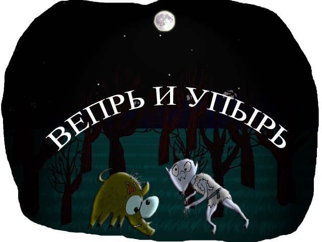

Антон Гринблат.

Сказы перпендикулярного леса параллельного мира
Вепрь и Упырь. Сказ 1. Монстры Жили-были два друга - Вепрь[1] и Упырь[2]. Вепрь думал, что он Вепырь, а Упырь думал, что он Упрь. Но в этом не было ничего страшного, ведь правда? Вот так и получилось, что в них обоих не было ничего страшного. Тоже мне, чудовища!
|
Вепрь и Упырь. Сказ 2. Воротила Как-то в полнолуние в полночь Вепрь и Упырь случайно встретили Нетопыря[3]. Они быстро познакомились и даже немного подружились. Так, самую малость, но все же. Нетопырь очень любил по утрам переворачивать мир. "Смотрите, я снова весь мир перевернул!" - гордо кричал Нетопырь, устраиваясь поспать. А Вепрь и Упырь смотрели на Нетопыря, висящего вверх тормашками, и, похрюкивая, смеялись над ним. Вот ведь воротила!
|
Вепрь и Упырь. Сказ 3. Угу Ночью, когда у всех, кому это надо, горят глаза, Вепрь и Упырь повстречали Неясыть[4]. То есть, они сначала повстречали летающие горящие глаза, а потом уже стало видно, что это Неясыть. Она приземлилась рядом, учтиво поклонилась Вепрю и Упырю, уставилась на них огромными немигающими глазищами, и замерла в ожидании. Вепрь хрюкнул, глядя на Упыря. Упырь почесал когтями затылок и спросил: - Ты что тут летаешь, на охоту собралась что ли? - УГУ! - сказала Неясыть и улетела. Угу!
|
Вепрь и Упырь. Сказ 4. Охота Решили как-то раз Вепрь и Упырь пойти на охоту. Долго бродили, искали какую-нибудь съедобную живность, да так ничего и не нашли. И тогда решили сожрать друг друга. Долго бились, а потом вспомнили, что они друзья, сели, обнялись, заплакали. Стыдно стало. А где слезы Упыря на землю капали, оттуда, как трава, шампуры с кровавым шашлыком прорастали, к луне тянулись, а у Вепря - с грибами да кореньями деликатесными. А потом еще пирог с мясом сверху упал. Вот она, удача охотничья!
|
Вепрь и Упырь. Сказ 5. Гиперпространство Решил как-то Упырь на Вепре верхом покататься. И Вепрь был не против - при такой-то силе отчего дорогого друга и не прокатить? Гоняли под луной по лесной поляне, Вепрь скорость набрал, сосну впереди не заметил, бах - и Упырь скатапультировался, а Вепрь в гиперпространство ушел. Космос ближе стал - звезды уже вокруг головы, как мухи летают, пустота кругом, ни верха ни низа нет... Лежит Вепрь кверху копытами под сосной, звезды считает, а Упырь из колючих кустов выбрался и ему искусственное дыхание делает прямо в пятак. Вернул Вепря с небес на землю. Оба, прихрамывая, домой пошли. Летчики-космонавты, блин.
|
Вепрь и Упырь. Сказ 6. Дневной сон Вепрь и Упырь спали днем в одном убежище. Вепрь во сне хрюкал и храпел, а Упырь - нет. Чтобы храпеть, надо дышать, а Упырь ведь мертвяк неупокоенный, а они дышат, только когда захотят. Вот и вышло, что Упырь спал, как убитый. Смешно, правда?
|
Вепрь и Упырь. Сказ 7. Купание Решили как-то Вепрь и Упырь купаться пойти. Подошли сначала к речке, а потом вспомнили, что Упырь текущей воды боится и пошли в лесу пруд искать. Нашли, смотрят - а там Вилы[5] по воде пишут что-то огненными буквами. А что - никто понять не может, даже они сами. Вепрь посмотрел на всё это безобразие и хрюкнул. А Упырь говорит Вилам: "А вы ледяными буквами пишите, чтобы прочитать можно было". Вилы послушались, начали ледяными буквами писать, и тут весь пруд замёрз нахрен. Так и не искупался ни Вепрь, ни Упырь в эту ночь. Советчики, блин! |
Вепрь и Упырь. Сказ 8. Поиски абсолюта Страшной-страшной чёрной ночью разбудил как-то Упырь Вепря ВНЕЗАПНО! И спросил жутким-жутким голосом: "СКАЖИ, СМЕРТНЫЙ, ЧТО ЕСТЬ НАИВЫСШЕЕ ИЗ ЗОЛ?!". В ответ на это Вепрь встал на задние копыта, подтянулся повыше, а передним на себя показал, да ка-а-ак хрюкнет! И тогда Упырь подумал, что ответ на его вопрос либо «смертность», либо «свинство». Потом оба довольные спать легли, весело похрюкав перед сном. Вот такие УЖАСНЫЕ философы, блин! [2022-01-22] |
|